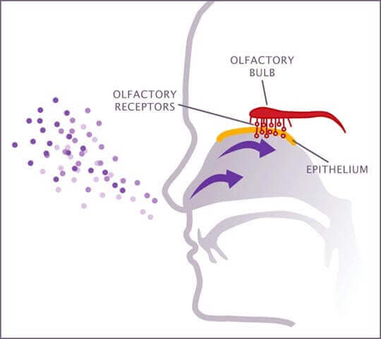

Prrocessing Different Odors
André Lombardi 7/24/2020
The waft of fresh, ocean air out the back porch, or the aroma of your favorite batch of homemade pastries. Whatever the odor, your nose picks up the strong scent every time you take a breath. But-- how exactly? Smell is a critical sense to humans and a multitude of other animals, which can notify our brain of potent substances, or make that morning on your porch even more satisfying.
Thanks to scientists Richard Axel and Linda Buck, we know how every one of us can identify different scents. In 1991, they published a fundamental paper that elaborated on the large family of around one thousand genes for odorant receptors. With that said, go ahead and take a deep breath. Yeah, don’t worry, I smell bad too. But how do we know we smell bad, and what triggers that? When we breathe, odor molecules enter our nostrils along with air. Each molecule can bind to a specific olfactory receptor, located on a neuron. Meanwhile, each neuron sits on the roof of your nasal cavity, known as the olfactory epithelium. These molecules, when bound to an olfactory receptor, will trigger a cellular response where reception at the membrane will result in a cascade of activated proteins (known as amplification). This will either cause a change in the DNA, construction of new proteins or lead to a transfer in the signal. In this case, the response will further notify the brain of the distinct aroma by sending the signal to the olfactory bulb (a neural structure) to interpret the smell.

(Easy Science for Kids)
(Easy Science for Kids)
While all of that information was previously known, unknown information has been recently discovered in a study conducted by neurobiologists at Harvard Medical School (HMS), which provided new insight on how smells are classified within the brain. As stated by Science Daily, the scientists delivered odors to awake mice, identifying chemical similarities between the fragrance in the olfactory cortex (a region of the brain to process smells) and the specific odors. Essentially, the cortex enabled scents to be distinguished when the odor was present.
“This is the first demonstration of how the olfactory cortex encodes information about the very thing that it’s responsible for, which is odor chemistry, the fundamental sensory cues of olfaction,” associate professor of neurobiology in the Blavatnik Institute at HMS Sandeep Robert Datta said.
To devise this investigation, they knew they wanted to quantitatively compare odor chemicals analogous to how differences in wavelength could be used to differentiate colors of light. Therefore, with complex machine learning to observe the properties of chemicals with profound odors, they also confirmed that each individual, whether it be a mouse or a human, will always have a varying perception of a particular smell.
“The plasticity of the cortex may help explain why smell is on one hand invariant between individuals, and yet customizable depending on our unique experiences,” Datta remarked.
So, next time you catch the aroma of something particularly striking: good or bad, you can thank the millions of receptors in your nose and the prized olfactory cortex.
Cover Photo: Discover Magazine